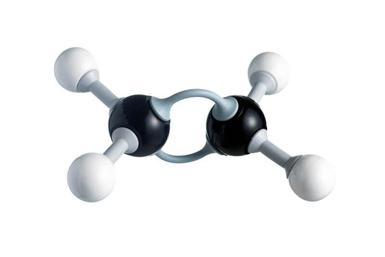

Đồng phân mạch carbon

Image source: Topic 4 sources
| Vietnamese | Đồng phân mạch carbon |
|---|---|
| English | Chain isomerism |
| Pronunciation | /tʃeɪn aɪˈsɒmərɪzəm/ |
| Word type | Noun |
Meaning (Vietnamese)
Hiện tượng đồng phân do cách sắp xếp mạch carbon khác nhau
Meaning (English)
Isomerism caused by different arrangements of the carbon chain
Example
Butane and 2-methylpropane show chain isomerism
Butan và 2-metylpropan thể hiện hiện tượng đồng phân mạch carbon
Source missing